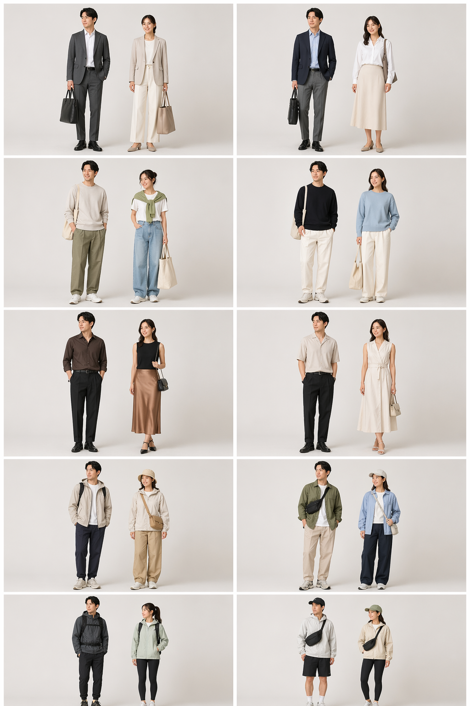
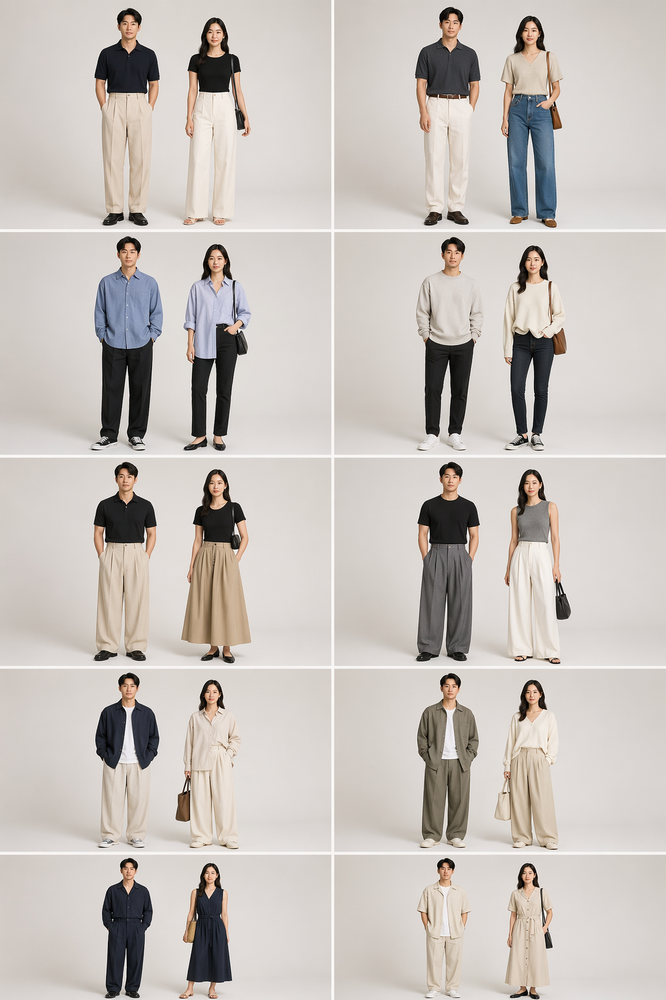
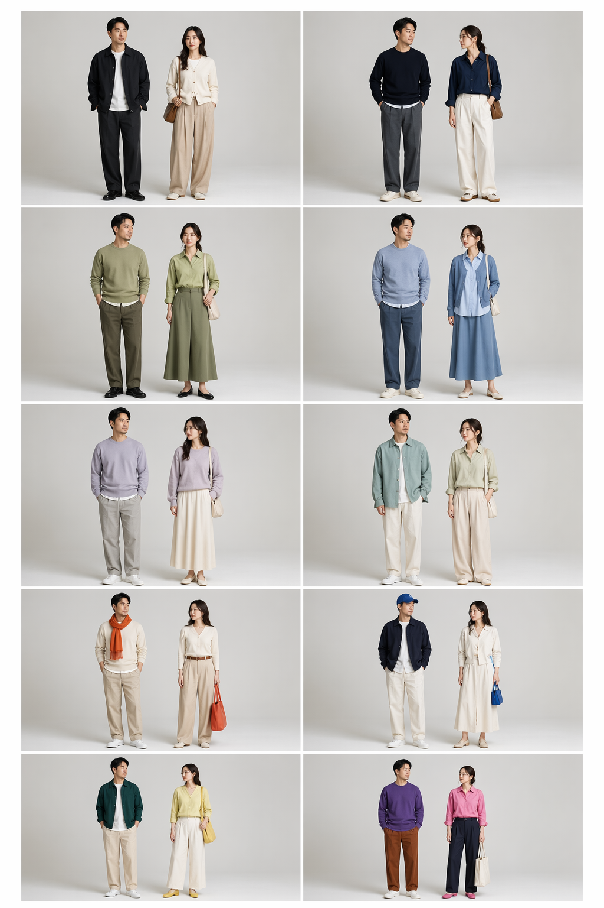
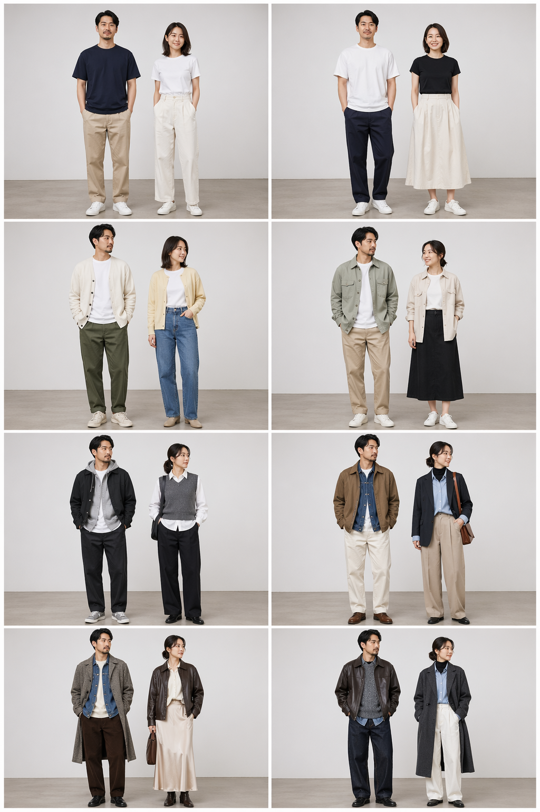
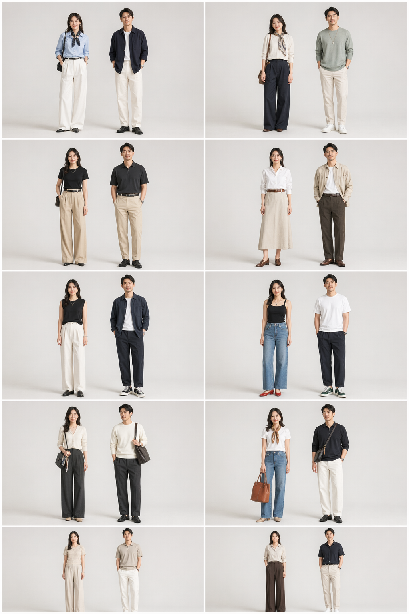
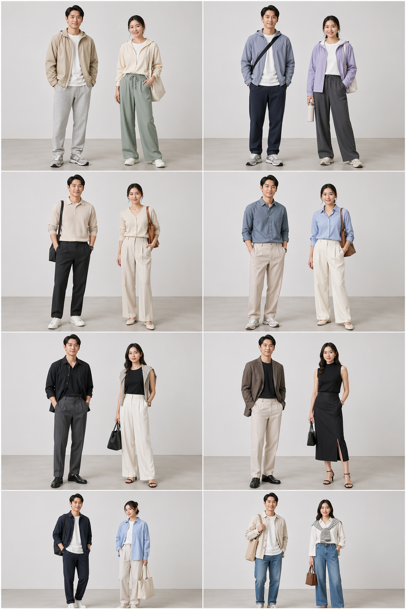
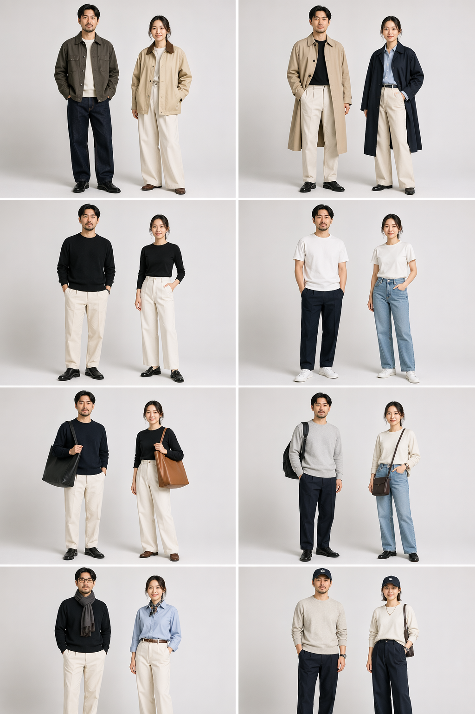
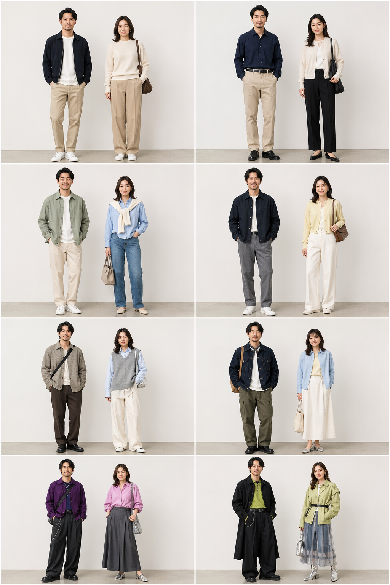
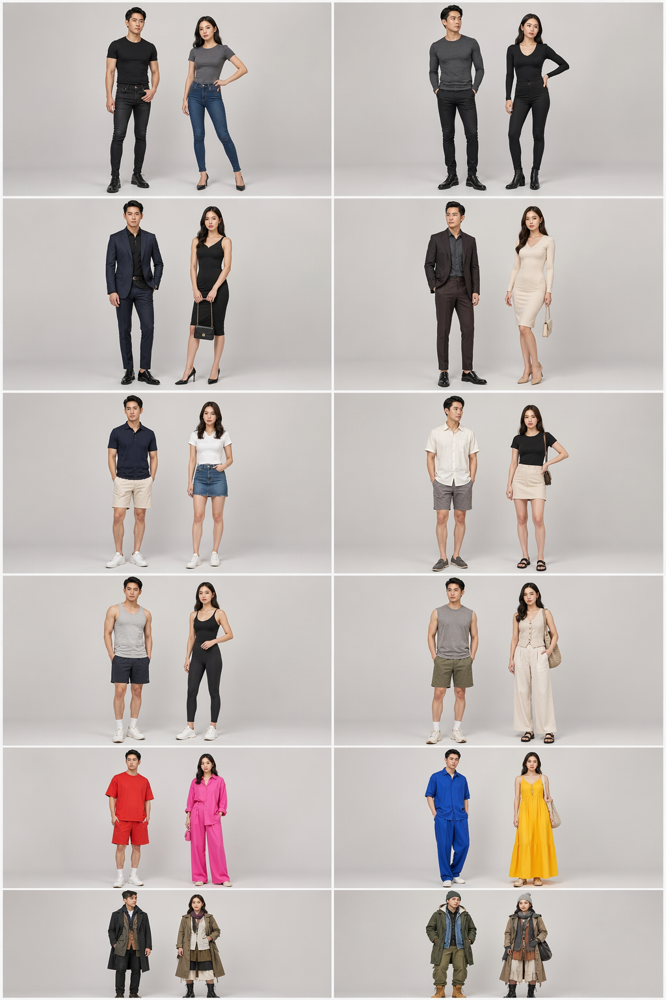
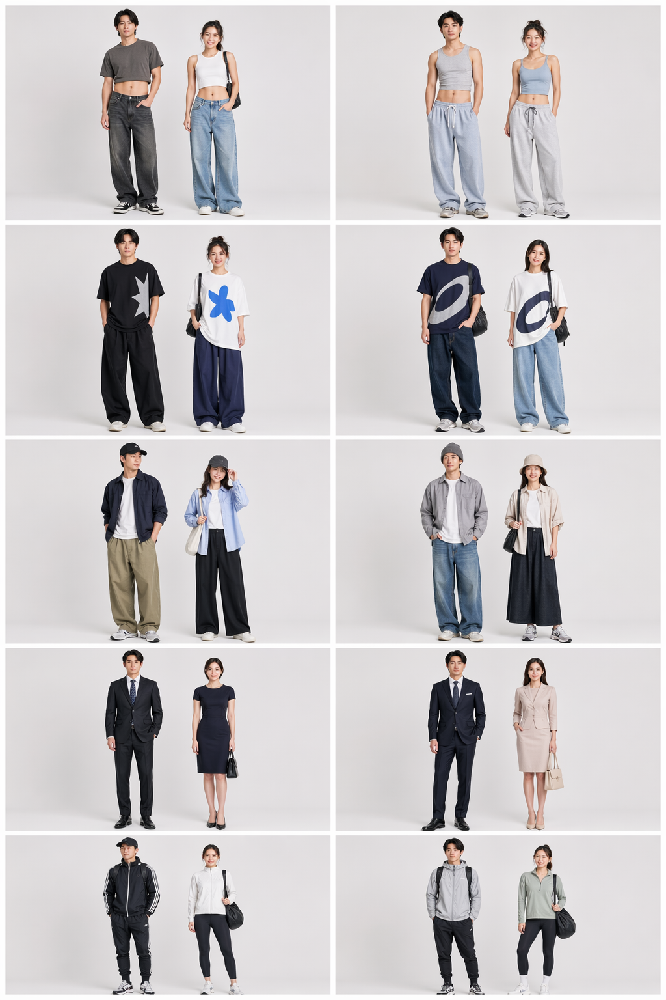

造型偏好问卷图片候选
每一题都按当前代码里的问卷选项生成。左侧是选项文案，右侧同一行对应两张候选图：候选 A 和候选 B。反馈时可以直接说“色彩偏好 / 基础色 + 一处亮色 / B 需要重做”。
1. 场景偏好
每行选 A 或 B
通勤干净场景适配、稳定完成度
轻松日常舒适、好穿、可复穿
约会/聚会更多视觉中心和造型感
城市旅行天气舒适、少量单品成套
运动户外天气和舒适权重更高
候选 A
候选 B

2. 轮廓偏好
每行选 A 或 B
上短下长强调腰线和比例
上松下窄上半身放松，下半身收住
上窄下宽上身利落，下装有廓形
全身松弛整体宽松、舒适优先
连衣裙/一体式减少上下装搭配成本
候选 A
候选 B

3. 色彩偏好
每行选 A 或 B
黑白灰 / 米棕 / 藏青低冲突、复穿稳定
同色系深浅靠颜色层次建立完整感
柔和低饱和保留颜色但降低存在感
基础色 + 一处亮色用一个重点提神
高对比 / 撞色接受更强视觉冲突
候选 A
候选 B

4. 叠穿偏好
每行选 A 或 B
简单两件尽量避免复杂叠穿
轻外套接受轻量外层
三层叠穿愿意用层次增强造型
材质混搭更复杂的层次和材质变化
候选 A
候选 B

5. 视觉重点偏好
每行选 A 或 B
上半身 / 脸周围重点靠近上半身
腰线比例和腰线
鞋子鞋子成为视觉重点
包 / 配饰包袋或配饰完成造型
整体低调不强调单点抢眼
候选 A
候选 B

6. 实用和造型取向
每行选 A 或 B
舒适优先天气舒适和实用性
均衡保持默认平衡
造型优先层次和视觉重点更高
工作日舒适，周末造型舒适与造型之间略偏完整
候选 A
候选 B

7. 推荐补齐项偏好
每行选 A 或 B
外套允许推荐外层
鞋子推荐尽量补齐鞋履
包袋用包袋补完整度和呼应
配饰允许少量配饰成为细节
候选 A
候选 B

8. 探索程度偏好
每行选 A 或 B
尽量稳定几乎不插入灵感推荐
一点变化低频尝试轻微变化
偶尔给我灵感允许更明显的新鲜感
大胆尝试提高探索频率，保留避雷项
候选 A
候选 B

9. 避雷项偏好（1/2）
每行选 A 或 B
不喜欢紧身紧身版型
不喜欢高跟鞋高跟或明显抬高鞋型
不喜欢短裙短下装
不喜欢无袖无袖或露手臂
不喜欢大面积亮色大面积高饱和色
不喜欢复杂叠穿多层复杂搭配
候选 A
候选 B

10. 避雷项偏好（2/2）
每行选 A 或 B
不喜欢露腰露腰 / 短上衣
不喜欢大 logo大标识感
不喜欢帽子帽子成为明显元素
不喜欢太正式明显正式商务/礼服感
不喜欢太运动明显运动感
候选 A
候选 B
